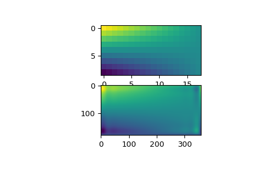
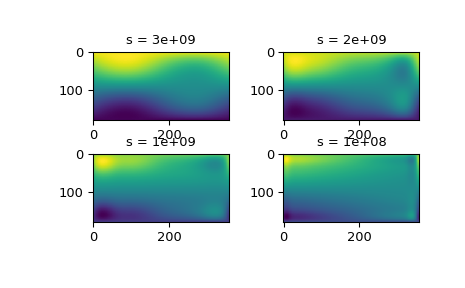

scipy.interpolate.RectSphereBivariateSpline¶
-
class
scipy.interpolate.RectSphereBivariateSpline(u, v, r, s=0.0, pole_continuity=False, pole_values=None, pole_exact=False, pole_flat=False)[source]¶ Bivariate spline approximation over a rectangular mesh on a sphere.
Can be used for smoothing data.
New in version 0.11.0.
- Parameters
- uarray_like
1-D array of latitude coordinates in strictly ascending order. Coordinates must be given in radians and lie within the interval (0, pi).
- varray_like
1-D array of longitude coordinates in strictly ascending order. Coordinates must be given in radians. First element (v[0]) must lie within the interval [-pi, pi). Last element (v[-1]) must satisfy v[-1] <= v[0] + 2*pi.
- rarray_like
2-D array of data with shape
(u.size, v.size).- sfloat, optional
Positive smoothing factor defined for estimation condition (
s=0is for interpolation).- pole_continuitybool or (bool, bool), optional
Order of continuity at the poles
u=0(pole_continuity[0]) andu=pi(pole_continuity[1]). The order of continuity at the pole will be 1 or 0 when this is True or False, respectively. Defaults to False.- pole_valuesfloat or (float, float), optional
Data values at the poles
u=0andu=pi. Either the whole parameter or each individual element can be None. Defaults to None.- pole_exactbool or (bool, bool), optional
Data value exactness at the poles
u=0andu=pi. If True, the value is considered to be the right function value, and it will be fitted exactly. If False, the value will be considered to be a data value just like the other data values. Defaults to False.- pole_flatbool or (bool, bool), optional
For the poles at
u=0andu=pi, specify whether or not the approximation has vanishing derivatives. Defaults to False.
See also
RectBivariateSplinebivariate spline approximation over a rectangular mesh
Notes
Currently, only the smoothing spline approximation (
iopt[0] = 0andiopt[0] = 1in the FITPACK routine) is supported. The exact least-squares spline approximation is not implemented yet.When actually performing the interpolation, the requested v values must lie within the same length 2pi interval that the original v values were chosen from.
For more information, see the FITPACK site about this function.
Examples
Suppose we have global data on a coarse grid
>>> lats = np.linspace(10, 170, 9) * np.pi / 180. >>> lons = np.linspace(0, 350, 18) * np.pi / 180. >>> data = np.dot(np.atleast_2d(90. - np.linspace(-80., 80., 18)).T, ... np.atleast_2d(180. - np.abs(np.linspace(0., 350., 9)))).T
We want to interpolate it to a global one-degree grid
>>> new_lats = np.linspace(1, 180, 180) * np.pi / 180 >>> new_lons = np.linspace(1, 360, 360) * np.pi / 180 >>> new_lats, new_lons = np.meshgrid(new_lats, new_lons)
We need to set up the interpolator object
>>> from scipy.interpolate import RectSphereBivariateSpline >>> lut = RectSphereBivariateSpline(lats, lons, data)
Finally we interpolate the data. The
RectSphereBivariateSplineobject only takes 1-D arrays as input, therefore we need to do some reshaping.>>> data_interp = lut.ev(new_lats.ravel(), ... new_lons.ravel()).reshape((360, 180)).T
Looking at the original and the interpolated data, one can see that the interpolant reproduces the original data very well:
>>> import matplotlib.pyplot as plt >>> fig = plt.figure() >>> ax1 = fig.add_subplot(211) >>> ax1.imshow(data, interpolation='nearest') >>> ax2 = fig.add_subplot(212) >>> ax2.imshow(data_interp, interpolation='nearest') >>> plt.show()
Choosing the optimal value of
scan be a delicate task. Recommended values forsdepend on the accuracy of the data values. If the user has an idea of the statistical errors on the data, she can also find a proper estimate fors. By assuming that, if she specifies the rights, the interpolator will use a splinef(u,v)which exactly reproduces the function underlying the data, she can evaluatesum((r(i,j)-s(u(i),v(j)))**2)to find a good estimate for thiss. For example, if she knows that the statistical errors on herr(i,j)-values are not greater than 0.1, she may expect that a goodsshould have a value not larger thanu.size * v.size * (0.1)**2.If nothing is known about the statistical error in
r(i,j),smust be determined by trial and error. The best is then to start with a very large value ofs(to determine the least-squares polynomial and the corresponding upper boundfp0fors) and then to progressively decrease the value ofs(say by a factor 10 in the beginning, i.e.s = fp0 / 10, fp0 / 100, ...and more carefully as the approximation shows more detail) to obtain closer fits.The interpolation results for different values of
sgive some insight into this process:>>> fig2 = plt.figure() >>> s = [3e9, 2e9, 1e9, 1e8] >>> for ii in range(len(s)): ... lut = RectSphereBivariateSpline(lats, lons, data, s=s[ii]) ... data_interp = lut.ev(new_lats.ravel(), ... new_lons.ravel()).reshape((360, 180)).T ... ax = fig2.add_subplot(2, 2, ii+1) ... ax.imshow(data_interp, interpolation='nearest') ... ax.set_title("s = %g" % s[ii]) >>> plt.show()
Methods
__call__(theta, phi[, dtheta, dphi, grid])Evaluate the spline or its derivatives at given positions.
ev(theta, phi[, dtheta, dphi])Evaluate the spline at points
Return spline coefficients.
Return a tuple (tx,ty) where tx,ty contain knots positions of the spline with respect to x-, y-variable, respectively.
Return weighted sum of squared residuals of the spline approximation: sum ((w[i]*(z[i]-s(x[i],y[i])))**2,axis=0)